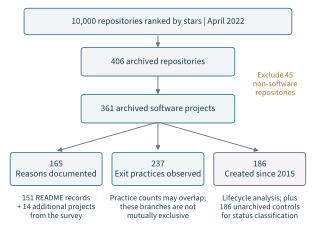
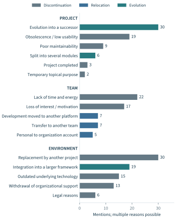
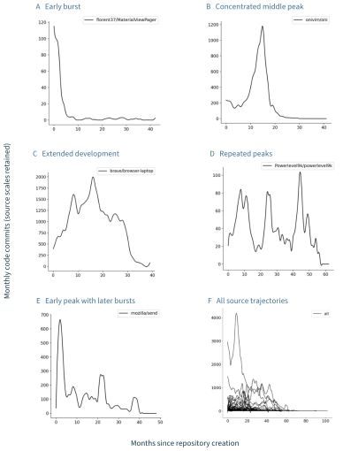
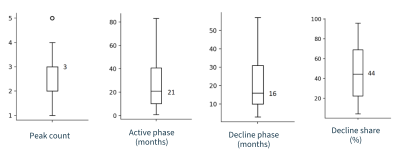
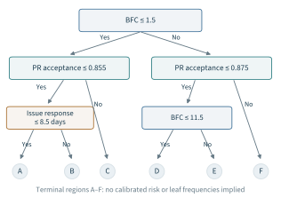
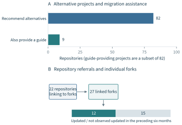
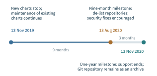

An archived repository is an unusually clear event in the otherwise gradual life of a software project. New work at that location stops, its history remains available, and visitors encounter an explicit change of status. The consequences are less uniform. Some archives mark the exhaustion of a maintenance arrangement. Others record the completion of a limited task, a transfer to another team, or the incorporation of useful functionality into a successor. The same platform state can accompany the loss, preservation, or renewal of a collaborative capability.
Chapter 7 examined how recorded work becomes evidence for recognizing people. This chapter changes the unit of evaluation: from an individual’s contribution to the continuity of a community’s work and its benefits. The connection runs through maintenance. Recognizing review, coordination, and support can make essential work visible, but an evaluation of sustainability must also ask whether that work can continue, who can undertake it, and what happens when the original arrangement changes.
The principal evidence is our study of 361 archived software projects, presented in Chapter 4 of Xia’s doctoral dissertation (Xia, 2024). It combines explanations of archival decisions, observed exit practices, commit histories, and a comparison of archived and unarchived projects. Chapter 2 used selected findings to introduce continuity beyond repository survival. Here the study is developed as a complete evaluation argument: its population and observation boundaries, the mechanisms it reveals, the limits of its statistical model, and the consequences for assessing a transition.
The central contribution is an account of continuity through change. The archive study shows why sustainability needs an identified function, affected parties, a time horizon, and a possible path of renewal or substitution. It also supplies concrete practices through which such paths become inspectable. Chapter 3 provides the design discipline; Chapters 4 and 6 explain how records become repeatable measurements. The present study adds the transition evidence needed to ask whether a specified capability can continue under an arrangement that those responsible for it can sustain.
8.1 Continuity beyond Repository Survival#
The boundary changes the judgment#
Repository survival is a useful object when a decision concerns that repository. An organization deciding where to submit a patch needs to know whether the location accepts contributions. A downstream operator deciding whether to retain a component needs to know whether its required functions and support can continue. A maintainer deciding whether to transfer responsibility needs to know whether another arrangement is feasible. These questions overlap, but their outcomes are measured at different boundaries.
Table 8.1 distinguishes four objects of continuity. A repository can become read-only while its software function continues elsewhere. A maintenance team can remain nominally present while losing the capacity to issue a release. A successor can operate successfully while some users remain unable to migrate. An assessment becomes more informative when it specifies which of these conditions matters to the decision and follows the evidence at that level.
| Object | Question | Relevant evidence |
|---|---|---|
| Repository | Can this location still accept and preserve work? | Writable status, preserved history, release and distribution locations. |
| Maintenance arrangement | Can essential responsibilities still be carried out? | Accepted roles, access, expertise, review and release capacity, support obligations. |
| Software function | Can the required capability continue under the relevant conditions? | Compatibility, working releases, defect response, maintained alternatives. |
| User transition | Can affected users continue their work at an acceptable cost? | Migration completion, adaptation effort, interruption, unresolved requirements. |
Book synthesis of the capability account in Chapter 2 and the archive study in Xia (2024), Chapter 4. These are related assessment objects, not four interchangeable indicators.
The capability account in Chapter 2 provides the conceptual starting point. Sustainability concerns the capacity to continue or renew a specified collaborative function and its relevant benefits over a stated horizon under stated conditions. The definition makes room for retirement when a function is no longer required, and for replacement when another arrangement can provide it. It also makes the burdens of maintaining and changing an arrangement part of the evaluation. Preserving an address while imposing an untenable workload on one person would satisfy a narrow persistence criterion while leaving the substantive problem unresolved.
This is particularly important for open source because the evaluated object can have several locations. Development may move to another repository, packages may remain available through a registry, discussions may continue on a mailing list, and users may depend on old releases. Research on packaging ecosystems shows how direct and transitive dependencies connect local maintenance to wider consequences (Decan et al., 2019). The relevant boundary follows the function and its dependencies; it cannot always be recovered from one repository’s event stream.
Archival is an administrative state with several meanings#
GitHub describes archival as making a repository read-only and indicating that it is no longer actively maintained; the platform also permits unarchiving (GitHub, 2026). This gives researchers an observable status. It does not identify why the status was chosen or what happened to the associated capability. A status field is therefore a starting point for inquiry, rather than a complete outcome definition.
Earlier studies approached discontinuation through maintainer explanations and observable maintenance activity. Coelho and Valente (2017) examined why popular projects ceased to be maintained. Coelho et al. (2018) developed a classifier for unmaintained or sparsely maintained projects and checked its judgments against developer feedback. These inquiries clarify different targets: an explanation of discontinuation, a maintenance-status assessment, and a platform archival flag. Their results become useful to this chapter when those targets remain explicit.
Our archive study extends the question to the paths taken around a status change. Its examples include replacement, relocation, handover, and restructuring. The distinction is substantive: a project replaced by another can cease to be maintained at its original location while its users retain access to a required function. Conversely, a fork can exist without acquiring the expertise and responsibility required for continued maintenance. The evaluation must follow the transition far enough to distinguish an available option from an operating successor.
A prospective property requires a temporal argument#
Current health and future continuity have different evidential requirements. A healthy-looking month can be sustained by accumulated effort that cannot be repeated. A quiet month can reflect a stable component with little unmet demand. The interpretation depends on the function, the obligations it creates, and the resources and relationships through which those obligations are met.
The time horizon must consequently be justified by the use. A short maintenance freeze, a release-cycle handover, and continued operation of a widely deployed dependency expose different risks. The observed history helps characterize those conditions. A prospective claim needs an additional argument about what can continue and under what changes. This chapter uses historical results to identify mechanisms and assessment requirements. It does not convert the archived-project sample into a forecast of every community’s future.
8.2 Designing the Archived-Project Study#
A popularity-selected population and several analytical samples#
The study began with the 10,000 public GitHub repositories having the most stars in April 2022. OpenDigger supplied the repository information and development records. Of these repositories, 406 were archived. Removing 45 non-software repositories, such as books, tutorials, and curated collections, left 361 archived software projects (Xia, 2024, Section 4.2). The selection deliberately focused on projects with substantial visibility, for which discontinuation could matter to users and other developers.
Among the 361 projects, 225 belonged to organizational accounts and 136 to individual accounts. Thirty-two programming languages were represented. These details describe the sample; they do not establish the comparative likelihood of archival by ownership or language. Estimating that likelihood would require denominators for the corresponding populations and an appropriate longitudinal design.
Figure 8.1 shows how the study’s questions lead to different subsets. The qualitative analysis of reasons concerns 165 projects with identifiable explanations. The analysis of exit practices concerns 237 repositories with observed practices. The lifecycle analysis concerns 186 projects created on or after 1 January 2015. For the classification analysis, the researchers selected a further 186 unarchived software projects created in the same broad period, ordered by stars from the initial population. The resulting nominal classification sample comprises 372 projects.

The popularity filter and the archival filter jointly define the scope. Small projects that never attracted substantial attention, abandoned repositories whose owners never selected the archive option, and projects maintained mainly elsewhere are not represented in the same way. The study can reveal mechanisms within visible archived projects. Its sample fraction cannot be interpreted as an ecosystem-wide failure rate.
| Inquiry | Sample or unit | Evidence and interpretation |
|---|---|---|
| Why archived? | 165 projects | README material, linked explanations, and survey responses; multiple reasons per project. |
| How retired? | 237 repositories | Observed practices in repository material and survey responses; actions can co-occur. |
| What trajectory? | 186 projects | Created on or after 1 January 2015; monthly code commits through the last observed commit. |
| What distinguishes status? | 186 archived + 186 unarchived projects | Five maintenance features and a retrospective decision tree; nominal candidate sample of 372. |
Source: Xia (2024), Sections 4.2–4.3. Selection began in April 2022. Subsamples overlap and must not be summed. The effective sample behind the published tree’s leaf annotations is not specified sufficiently to reconcile it with the nominal candidate sample.
Combining public explanations and maintainer responses#
The researchers inspected the README files of all 361 repositories and followed relevant links to announcements, issues, project websites, and other public explanations. They found archival reasons for 151 projects in this material. To supplement the public record, they collected 191 publicly available maintainer email addresses and asked two open questions: why the project had been archived, and how its deprecation had been handled. Thirty-four responses arrived within 20 days, a reported response rate of 17.8%. The responses added reasons for 14 further projects and additional explanations for some already documented cases, giving 165 projects with identified reasons.
Two researchers used open coding and constant comparison. Nine reasons from the earlier failure study supplied initial categories, which were revised as new explanations appeared. The dissertation reports no new reason after the 104th project in the coding sequence and a subsequent axial-coding iteration, producing 16 reason codes. That saturation statement describes the development of the coding scheme within the observed material. It does not make undocumented projects exchangeable with those whose maintainers explained their decisions.
The same principle applies to the survey. The 34 replies enrich the explanation of events, especially where the public record is incomplete. They do not constitute a representative poll of all archived-project maintainers. Recall, the availability of contact information, and willingness to respond can shape the resulting account. Combining records and explanations makes the study more informative, while retaining the provenance of each observation remains essential. This is consistent with case-study guidance on triangulation and the purposes for which archival records were originally produced (Runeson and Höst, 2009).
Exit practices were studied through a related but separate procedure. Initial codes came from survey responses, followed by two rounds of repository review. Researchers inspected README files, recent issues and pull requests, and evidence of their disposition; a third researcher joined the discussions as additional practices were identified. After repositories without an observed practice were removed, 237 remained. A second review checked for the expanded practice set. Consequently, a documented practice need not be accompanied by an explicit archival reason, and the 237-practice sample can be larger than the 165-reason sample.
Inactivity and archival do not select the same projects#
The study also examined repositories without a code commit during the preceding year. Among the top 10,000 repositories, 1,068 met that criterion, but only 263 were archived. Among the top 5,000, 439 had no commit during the year and 118 were archived. Table 8.3 retains these different denominators. Most quiet repositories in these particular selections had not been marked archived.
| Star-ranked population | No commits in year | Also archived | Share |
|---|---|---|---|
| Top 10,000 repositories | 1,068 | 263 | 24.6% |
| Top 5,000 repositories | 439 | 118 | 26.9% |
Counts: Xia (2024), Section 4.3; shares recomputed as 263/1,068 and 118/439 and rounded to one decimal. These repository populations precede the software-only exclusions. The second row is nested within the first; inactivity is an observation, not an independently confirmed absence of maintenance.
A missing archival flag therefore cannot serve as positive evidence that maintenance capacity is available. Equally, a year without commits does not establish that a component has ceased to meet its purpose. The observation may accompany unmet demand, a stable implementation, development elsewhere, or a repository whose purpose does not require software changes. Excluding non-software repositories improves one part of the comparison but does not resolve the remaining meanings of inactivity.
This is an application of the observation discipline developed in Chapters 3–4. The event stream records particular actions at particular locations. A maintenance judgment requires those records to be connected to responsibilities and demands. OpenDigger makes repeated observation feasible; it cannot infer the full state of a community from the absence of one event type alone.
8.3 Why Projects Are Archived#
Sixteen reasons across project, team, and environment#
Figure 8.2 reproduces all 16 reason counts from the dissertation, grouped into project, team, and environmental factors. Reasons were multiply coded: one project could report several. The figure therefore presents mentions rather than mutually exclusive shares of the 165 projects. Its second visual distinction retains the source’s separation of discontinuation-related reasons, relocation or transfer, and evolution or restructuring.

Replacement by another project and evolution into a successor each appear 30 times. They occupy different positions in the original classification: replacement is associated with discontinuing the original project, while a successor is associated with its evolution. For continuity evaluation, both require examining a relationship beyond the archived repository. Their difference may matter to governance, compatibility, and responsibility even where both offer users another option.
Project-level reasons include obsolescence or low usability (19), poor maintainability (9), splitting into several modules (6), completion of the project (3), and a temporary topical purpose (2). These cases distinguish a demand problem from a production problem. A completed, limited-purpose project may no longer require active development. A difficult-to-maintain project may still be needed but lack a feasible maintenance arrangement. An activity series can look similar in both circumstances while the appropriate decision differs.
Team-level explanations include lack of time and energy (22), loss of interest or motivation (17), development moving to another platform (7), transfer to another team (7), and movement from an individual to an organizational account (5). This group connects continuity to responsibility and observation. The departure of a person can remove essential capacity. A change of account or platform can instead move the same work outside the original observation boundary. Both events require investigation: the first can reduce capacity, while the second requires tracking where work continues.
Environmental reasons include integration into a larger framework (19), outdated underlying technology (15), withdrawal of organizational support (13), and legal reasons (6), alongside replacement. These are changes in the conditions under which local work has value or can be sustained. A technically competent team may have good reasons to stop maintaining a component when its underlying platform changes or the functionality is absorbed elsewhere. Evaluating the decision solely through the original repository’s persistence would miss that adaptation.
Explanations identify mechanisms rather than isolated causes#
The coded explanations often coexist. The dissertation describes projects whose maintainers reported both insufficient time and declining motivation, and others where maintainability difficulties coincided with attention moving to new work. Such accounts indicate possible mechanisms linking workload, interest, technical conditions, and the decision to archive. A multiple-reason codebook is better suited to these cases than a forced single-cause classification.
There remains a distinction between a reported explanation and an identified causal effect. A maintainer can provide direct evidence about their reasons for a decision. The frequency of that explanation does not estimate how much a different allocation of time, money, or support would have changed the outcome. The archive study develops a taxonomy grounded in decisions and public records. It supplies hypotheses about mechanisms and identifies relevant conditions for subsequent evaluation.
The treatment of replacement illustrates a conceptual improvement over a simple competition account. The researchers revised the earlier label of being overtaken by a competitor because some projects actively recommended the alternative. Replacing a local implementation can preserve useful functionality and reduce duplicated effort. The relevant evaluation then concerns which benefits are retained, which requirements change, and who bears the adaptation cost. The archive study thus gives empirical substance to Chapter 2’s distinction between the survival of a producer and the continuity of a capability.
Maintenance is coordination as well as code production#
The maintainer accounts also reveal burdens generated by incoming requests and expectations. More participation can supply useful work while also increasing the need to review, explain, prioritize, and resolve disagreements. The workload depends on the relation between contributions and the capacity to integrate them. Counting additional pull requests as an unconditional improvement would conceal this relation.
This interpretation is consistent with the integrator study by Gousios et al. (2015), which identifies difficulties in prioritizing contributions and preserving project quality. Research on maintainer expertise similarly treats communication, management, technical judgment, and personal attributes as connected parts of the role (Dias et al., 2021). These studies provide context for interpreting the archive accounts. The detailed evidence in this chapter remains the reported decisions and practices of the archived projects.
Chapters 4–5 supply complementary measurements. Activity broadens the observed record beyond commits; OpenRank represents relationships in collaborative work. They can help identify who participates in discussion and coordination and where represented work is concentrated. Neither score, by itself, measures the effort required to handle future requests or the availability of someone authorized to make a release. The archive findings therefore strengthen the case for linking behavioral measures to a specific account of essential responsibilities.
8.4 Development Trajectories and Maintenance Conditions#
Three different clocks#
The lifecycle analysis used the 186 archived projects created on or after 1 January 2015. The cutoff was chosen because GitHub event archives before 2015 used a different format, increasing the work needed for a consistent historical analysis. For each project, the researchers examined monthly code commits. This is a historical commit-based proxy for development activity, distinct from the multi-behavior Activity measure developed in Chapter 4 (Xia et al., 2022).
The study defines the development activity lifecycle (DAL) as the interval from repository creation to the last code commit. In compact notation,
The median DAL is reported as 48 months. The archive date is a separate event. A repository can be archived after its last commit, and the resulting interval may include continuing use or discussion. A downstream user’s last use is a third date, often absent from repository records. The commit lifecycle, the administrative lifecycle, and the useful life of the software consequently need separate interpretation.
This distinction affects the meaning of a decline. In this study, the decline phase runs from the final detected development peak to the last commit; the earlier period is called the active phase. The terminology identifies segments of a commit trajectory. It does not directly measure the point at which the software stopped being useful or the date at which maintainers ceased all forms of work.
Several development patterns, rather than a single life curve#
Figure 8.3 retains the five representative curves and the all-project overlay from the source. The original curves are preserved because the underlying monthly series and complete smoothing parameters were not supplied. The layout translates the surrounding labels, while the source scales and plotted traces remain intact. No new series has been estimated from the appearance of a curve.

The curves illustrate an early burst followed by low activity, a concentrated middle peak, a more extended development period, and repeated peaks. They show why a single growth-then-decline narrative is too restrictive for the sample. Recurrent development can reflect releases or renewed work, while a large initial burst can be followed by a long interval with relatively few commits. These are patterns to be interpreted with project history, rather than stages that every community must traverse.
Using three-month observation periods, the study reports that 44% of projects reached their largest monthly-commit peak during the first three months. A further 24% peaked in the remaining first half of the lifecycle, and 32% in its second half. These reported percentages characterize the sampled histories. They are not a distribution of times to failure, because the selected population already consists of archived projects and the target event is a commit peak.
For peak counting, the study used scipy.signal.find_peaks. Most projects had two or three detected peaks; 9% had one and 8% had five. Peak detection depends on smoothing and parameter choices. The dissertation provides the analytical approach but not enough detail to reproduce every choice from the chapter alone. Accordingly, the original plots and reported summaries are treated as historical findings, without claiming a new replication or a universal lifecycle classifier.

The median active phase was 21 months, the median decline phase 16 months, and the median decline share of DAL 44% (Figure 8.4). Each is a separate summary of a project-level quantity. Adding the two phase medians does not reconstruct the median DAL, and dividing one marginal median by another does not reconstruct the median decline share. Preserving these definitions matters when historical figures are combined into a book.
The substantive finding is the extended interval after the final observed development peak. Such an interval creates an opportunity to examine changing demand, maintenance arrangements, and possible transitions before an archive flag appears. It does not establish that every low-activity interval requires intervention. The appropriate response depends on whether the required capability is stable, unsupported, or already moving elsewhere.
Commit concentration and the responsibilities it represents#
The classification analysis used five features drawn from community-health metrics: Bus Factor Contributors, issue response time, issue resolution duration, pull-request merge duration, and pull-request acceptance ratio. Table 8.4 records the experiment’s definitions. Counts directly associated with community size, such as total commits and issues, were deliberately avoided. This design choice reduces one obvious source of scale dependence, although the remaining features are not automatically independent of project size or maturity.
| Feature | Definition in the study | Main interpretive limit |
|---|---|---|
| Bus Factor Contributors (BFC) | Smallest number of contributors accounting for at least 50% of code commits. | Concentration of recorded commits; expertise and permissions require further evidence. |
| Issue response time | Median days from issue creation to the first comment by someone other than its author. | First response need not resolve the problem. |
| Issue resolution duration | Median days from opening to closing, over closed issues. | Unresolved issues are outside this duration statistic. |
| PR merge duration | Median days from creation to merge, over merged pull requests. | Rejected and still-open requests are outside this duration statistic. |
| PR acceptance ratio | Merged pull requests as a proportion of all opened pull requests. | Pending work and end-of-project cleanup can affect the ratio. |
Source: Xia (2024), Section 4.3.4. These definitions belong to the historical experiment. The thesis does not fully specify feature observation windows, missing-value handling, or all decision-tree fitting parameters. No current OpenDigger definition is substituted for them.
The study’s Bus Factor Contributors (BFC) measure counts the smallest set of contributors responsible for at least half the commits. If commit totals are ordered as , the definition can be written as
With no eligible commits, this expression does not supply a meaningful concentration count. The measure requires an observation period and an identity policy, even though the historical report does not specify all implementation choices. Its meaning is the concentration of recorded commits, not a direct observation of what would happen if contributors left.
Current CHAOSS documentation uses the name Contributor Absence Factor for a related 50% contribution-concentration measure and explicitly allows different contribution types (CHAOSS, 2026). The historical BFC name and commit definition are retained here so that the experiment is not silently reinterpreted. A broader contribution measure might answer a useful new question, but it would be a different measurement specification.
The distinction between concentration and substitutability is central. Someone who rarely commits may understand release engineering, review difficult changes, or hold essential access. Conversely, several frequent committers may depend on the same specialist or employer. Jabrayilzade et al. (2022) investigate this problem by combining version-control information with code reviews and meetings. Their work supports examining knowledge channels beyond commits. In our framework, the further question is which essential responsibilities remain covered under the contemplated change.
What the retrospective tree establishes#
The first split of the reported decision tree is BFC at 1.5, separating projects with one commit-concentration contributor from those with at least two. Subsequent splits use the PR acceptance ratio, issue response time, and a further BFC threshold. Figure 8.5 retains the exact split conditions, including the decimal thresholds used by the fitted tree.

The tree directs attention to the concentration of code production and the handling of incoming work. That is a useful empirical connection to maintenance conditions. Its evidential role remains retrospective: the researchers compared projects already designated archived or unarchived. The nominal input consists of 186 in each class, rather than the natural prevalence of archival in the broader ecosystem.
The displayed leaf annotations do not reconcile with that nominal sample, and the thesis does not fully report the effective fitting subset, holdout procedure, or predictive performance. Some leaf labels also differ between the figure and prose. The present chapter therefore uses the verified split structure and feature definitions, while leaving leaf frequencies and outcome probabilities unasserted. This preserves the study’s interpretable modeling result without turning unresolved annotations into a new quantitative claim.
The PR acceptance branches illustrate why temporal context matters. An unusually high ratio can occur when a project processes outstanding requests before closing. Its value may consequently reflect an exit procedure as well as a maintenance condition. If such information is measured after an archival decision, using it to predict that decision would reverse the intended time order. The original retrospective comparison does not resolve this issue by itself.
Independent work demonstrates that maintenance-related outcomes can be modeled when their target is specified. For example, the Apache Incubator study by Yin et al. (2021) forecasts graduation-related sustainability outcomes from socio-technical histories. Graduation under a foundation’s process is a different label from archival on GitHub. These studies should inform the design of new comparisons, rather than be pooled as if they measured the same endpoint.
To evaluate an early-warning use of the archive features, observations would need to stop at a declared prediction date and outcomes be assessed over a later horizon. Testing should respect temporal order and shared project lineage; the general importance of dependence-aware validation is developed by Roberts et al. (2017). Performance would then need assessment in the population where warnings are used, with its actual prevalence and costs of error. Such work would extend the archive study. It has not been carried out as part of this chapter.
8.5 Exit, Transfer, and Renewal#
Three phases of an observed transition#
The study’s most directly reusable practical result is its three-phase account of exit: recognizing a change, communicating with affected parties, and executing the transition. Table 8.5 retains all 12 practice counts from the 237-repository subset. The phases organize observed actions and responsibilities. Their order is useful for interpretation, although a real project may revisit discussions or revise plans as conditions change.
| Phase | Practice | Projects |
|---|---|---|
| Recognize | Declining use and participation | 8 |
| More discussion of the project’s future | 5 | |
| Major external change | 3 | |
| Communicate | Publish a transition announcement | 47 |
| Discuss challenges and transition plans | 23 | |
| Seek help or a possible handover | 5 | |
| Execute | Add a status note to the README | 237 |
| Recommend alternatives, sometimes with a migration guide | 82 | |
| Resolve, merge, or close pending issues and pull requests | 45 | |
| Link to downstream forks | 22 | |
| Provide contact information | 10 | |
| Set and follow a deprecation timetable | 7 |
All 12 counts retained from Xia (2024), Table 4.2, among 237 repositories with observed practices. Counts overlap and describe adoption, not success rates. Phase labels are translated and shortened; practice meanings are preserved.
The recognition phase concerns evidence that a decision is needed: declining use or participation, recurring discussion of the project’s future, and changes in the surrounding technology or organization. These signals frame a question about the future arrangement. A lower event count alone does not decide whether to invest, transfer, replace, or retire; the signal must be interpreted against the function and the conditions that have changed.
Communication makes the decision and its reasoning available to contributors and users. Forty-seven projects published transition announcements, and 23 discussed challenges and transition plans. Such records can reveal affected parties and requirements that a repository metric misses. They can also distinguish a considered change from unexplained disappearance. The evidence concerns the presence and content of communication; the study did not estimate the average causal effect of an announcement on migration success.
Execution turns a plan into observable changes. Every repository retained in the practice subset had a README status note. Other actions included recommending alternatives, processing outstanding work, identifying forks, providing contact details, and setting a timetable. The counts must be read within the selection: 237 README notes among 237 repositories with observed practices does not imply that all 361 archived software projects provided one.
The archive study also examined quiet, unarchived repositories in the top-5,000 selection. Of 321 such repositories, 101 were excluded as non-software, leaving 220. Only 32 of those 220 explicitly stated their status in the README. This supports the practical importance of status visibility. It remains an observational comparison between differently selected groups, rather than a demonstration that pressing the archive button causes better communication.
A destination is the beginning of a continuity argument#
Eighty-two repositories recommended alternatives, and nine of those also supplied a migration guide. Twenty-two repositories linked to one or more downstream forks, yielding 27 distinct referred forks. Twelve of those forks had updates in the preceding six months; one of the 27 was itself archived (Xia, 2024, Section 4.3.2). The referral counts, fork counts, and update observations use different units and should remain separate.

These observations establish that transition options were made visible and that some referred forks continued to receive changes. They do not establish how many users adopted those forks, whether important defects were addressed, or whether maintenance persisted beyond the observed interval. A fork that receives no update during six months may be inactive or may have little current need for change. A fork that does receive updates may still lack a stable release and support arrangement.
Research on hard forks helps interpret the distinction. A hard fork develops as an independent branch, whereas many social forks are temporary vehicles for proposing changes to an upstream project. Zhou et al. (2020) show why these forms should not be treated as one phenomenon. In this chapter, a referred fork is a candidate continuation path. Its evaluation requires evidence of the responsibilities and functions it actually assumes.
Table 8.6 translates the observed practices into their immediate evidential roles and the further observations needed for a continuity judgment. The progression from a recommendation to a working migration is especially important. A destination can be technically suitable yet costly for a particular user to adopt. A guide can describe an intended procedure while leaving important configurations unsupported. Evaluation needs both the destination and the passage to it.
| Observed action | Immediate evidential contribution | Further evidence for continuity |
|---|---|---|
| Recommend an alternative | Identifies a possible destination. | Fit to required functions and compatibility with affected users’ environments. |
| Publish a migration guide | Describes a transition procedure. | Successful use of the procedure, effort, failures, and residual dependence. |
| Link a fork | Identifies a continuing branch and potential maintainers. | Independent maintenance, accepted responsibility, releases, and response capacity. |
| Resolve or close requests | Documents a disposition of outstanding work. | Whether defects were remedied, transferred, declined with explanation, or left unresolved. |
| Set a timetable | Makes stages and deadlines explicit. | Whether users received notice and could complete the required transition. |
| Provide contact details | Preserves a possible communication route. | Availability, agreed scope, and actual handling of subsequent requests. |
Book synthesis from the practices in Table 8.5. The final column states evaluation requirements; it does not report outcomes measured in the archive study.
Handover depends on accepted responsibility#
Five projects sought help or a possible takeover. The dissertation describes two requests that received 12 and seven expressions of interest respectively, yet the projects were still discontinued and archived. Interest did not become a completed transfer in those cases. The result is modest but consequential: responses to a call for help are not equivalent to maintenance capacity.
An effective handover can require expertise, permissions, working infrastructure, agreement about scope, and the time to acquire project knowledge. The abandonment-and-survival study by Avelino et al. (2019) provides complementary evidence: new core developers can continue projects after earlier core developers leave, while access and time can impede that process. Its definition and sample differ from the archive study, so its observations are used to understand the mechanism, rather than as another estimate for the 361 projects.
This analysis connects directly to the contribution-recognition problem in Chapter 7. A person may receive credit for helpful work without being prepared or authorized to assume an enduring obligation. A community may benefit from many occasional contributions while still depending on one person for releases. Recognition can support the visibility of that work; a sustainability evaluation must additionally establish how responsibility is accepted, supported, and renewed.
Timetables make a transition assessable#
Seven repositories in the practice sample set and followed a deprecation timetable. The dissertation uses helm/charts as an example. The published chart-repository timetable spans November 2019 to November 2020, with an intermediate nine-month migration milestone (Figure 8.7) (Helm project, n.d.).

helm/charts deprecation timetable (Helm project, n.d.); compare Xia (2024), Section 4.3.2. These chart-repository milestones do not establish completion of users’ Helm 2–3 migrations.The timetable is valuable because it separates actions that have different consequences: stopping new additions, changing discovery and support expectations, and ending support while preserving an archive. It also identifies an interval during which affected parties can act. These are inspectable commitments. Whether the interval was adequate for particular users remains an outcome question, requiring evidence about their dependencies, available resources, and completed adaptations.
API-deprecation research examines precisely such propagation beyond the producer, tracking the duration and extent of clients’ responses to change (Robbes et al., 2012). The lesson for community evaluation is to retain the downstream side of the transition. The completion of a maintainer’s announced schedule and the continuity of users’ work are related outcomes with potentially different dates.
8.6 Evaluating Continuity through Transition#
From a status judgment to a comparison of arrangements#
The evidence supports a change in how the evaluation question is framed. Instead of treating archival as the outcome to avoid in every case, an evaluator can compare feasible arrangements for continuing, transferring, replacing, or retiring the relevant function. The alternatives are evaluated under their actual conditions, including the responsibilities and burdens they create. This applies the framework in Chapter 3 to a transition whose boundaries may move.
Consider a project whose original maintainer can no longer manage incoming work. Continuing under the current arrangement, delegating release responsibility, recommending a maintained alternative, and retiring the function are distinct options. Their assessment requires a common account of what affected parties need, but it need not compress all consequences into one score. A shorter response time can be useful while increased maintainer burden makes an arrangement infeasible. A successful migration can preserve function while changing compatibility or transferring costs to users.
Table 8.7 specifies the design elements needed to examine such a comparison. The protocol follows the established sequence of question, objects and conditions, measurements, reference arrangements, interpretation, and use. It adds the transition-specific evidence made visible by the archive study: lineage, responsibilities, multiple event dates, and the distinction between an action taken and a capability retained.
| Design element | Specification | Evidence to retain |
|---|---|---|
| Object and purpose | Name the function, affected users, and decision. | Requirements and the consequences of losing the function. |
| Alternatives | Compare continued maintenance, transfer, replacement, or retirement. | Scope, responsibilities, and feasible resources for each option. |
| Conditions | Fix versions, dependencies, access, knowledge, and observation boundaries. | Dated repository and package mappings; accepted roles. |
| Standards | State minimum service requirements and acceptable burdens. | Stakeholder judgments, required tests, workload and migration constraints. |
| Time | Separate announcement, freeze, last commit, archival, and follow-up. | Actual dates and repeated observations over a justified horizon. |
| Outcomes and revision | Examine capability, maintenance, user adaptation, and unresolved needs. | Results in their own units, missing evidence, explanations, and revision decisions. |
Proposed application of Chapter 3’s evaluation framework, informed by the archive study. This is a design specification for future or ongoing assessments, not an additional experiment.
Chapter 2’s stakeholder effect profile is useful here. Outcomes can be recorded in their own units: availability of a supported release, time to address a required defect, maintainer effort, adaptation time, or unresolved downstream requirements. The applicable standards determine which requirements are binding and which trade-offs are acceptable. An unobserved migration outcome remains unknown; it cannot be assigned a zero cost merely because the source repository contains no complaint.
The evaluation also needs a clear relationship between the reference arrangement and the claim. A descriptive account can report what followed a handover. A comparison can examine whether different arrangements met the stated requirements. A causal claim that a particular exit practice improved outcomes requires a design that addresses why projects adopted it and what else changed. The archive study primarily provides descriptive and explanatory evidence for designing those further inquiries.
Follow capability and burden across the new boundary#
A longitudinal assessment should preserve a dated map of the transition: original and successor repositories, packages and releases, responsible groups, and the relationships being asserted. Replacement, repository relocation, and independent fork development should be represented separately. A renamed address may preserve identity; a compatible replacement may preserve function without preserving the same project. The map makes these choices visible rather than embedding them silently in an aggregation.
OpenDigger’s observation, labeling, and metric services provide an operational basis for maintaining such records (Wang et al., 2026). The infrastructure can support repeated measurements at specified locations and retain the definitions used. The evaluation needs supplementary evidence when the claim concerns accepted responsibility, private support arrangements, or downstream migration. Those facts are not guaranteed to appear in public collaboration events.
Follow-up should examine the function as well as the destination. A new repository with continuing commits may have dropped a required platform. A successor release may work while no one accepts future security-response responsibility. A transfer may relieve the original maintainer while concentrating obligations on another unsupported person. These possibilities identify the evidence that would distinguish continuity from a temporary relocation of risk.
The costs of transition deserve the same attention as the availability of an alternative. Users can face testing, deployment, compatibility, training, and coordination work. Maintainers can face migration support and unresolved obligations from old releases. The appropriate horizon includes the period in which these costs and benefits arise. A brief improvement in visible activity is insufficient to settle a longer-term continuation decision.
Conclusions supported by the evidence#
The study establishes a diverse set of archival explanations, an observed repertoire of exit practices, and several patterns of development activity in a popularity-selected GitHub sample. It also identifies commit concentration as the first discriminator in the reported status tree. Together, these results support investigating maintenance responsibility and continuity across transitions. They do not imply that every low-activity project is unhealthy or that every recommended successor is sustainable.
The strongest theoretical consequence concerns the evaluated object. Administrative continuity and functional continuity can diverge. The archive reasons reveal ways in which capability moves, while the practice records show what information is available for examining that movement. The proper unit of analysis can therefore be a function and its supporting arrangement across several repositories and periods, provided that the relationships between them are documented.
The second consequence concerns time. Creation, peak development, last commit, announcement, archival, and user migration are different events. Choosing one as the endpoint changes the interpretation of a measured duration. The archive study’s DAL and decline-phase results are informative precisely when their commit-based definitions remain intact. A prospective evaluation then adds the observations needed to assess the subsequent function and obligations.
The third consequence concerns the relation between participation and capacity. Concentration can expose dependence on a small set of people, but substitutability requires knowledge and authority as well as visible activity. The failed handover attempts make this distinction concrete. The presence of interested contributors does not remove the need to establish who can and will undertake essential work.
Finally, a transition practice is itself open to evaluation. An announcement, guide, fork referral, or timetable changes the information and options available to participants. Its adoption is observable; its consequences require further evidence. This extends the reflexive argument developed in Chapters 6–7: arrangements introduced to improve collaboration become evaluated objects in their own right.
| Concept | Empirical anchor | Refinement and boundary |
|---|---|---|
| Evaluated object | Reasons include successors, relocation, restructuring, and replacement. | Follow the relevant capability across repositories; a destination link alone does not demonstrate continuity. |
| Observation | Reasons, practices, and trajectories use different subsamples. | Visibility is question-specific; missing explanations remain unknown. |
| Time and conditions | Long post-peak intervals and explicit transition schedules. | Separate lifecycle landmarks and horizons; a last commit is not an archival date. |
| Models and use | Commit concentration appears at the tree’s first split. | Use the finding to examine maintenance responsibility; a split rule is not a universal risk threshold. |
| Value and consequences | Alternatives, forks, guides, and handover attempts. | Assess both retained capability and transferred burden; adoption of a practice does not establish its effects. |
Synthesis based on Xia (2024), Chapter 4 and the analyses in this chapter. It specifies how the evidence qualifies and develops Chapters 2–3.
The contribution to Open Source Evaluatology#
Table 8.8 brings these findings back to the book’s framework. Sustainability is evaluated through the continuity of a specified capability under changing conditions, with explicit attention to the path and the burdens of transition. Repository events remain indispensable evidence, but their significance follows from that evaluative question.
The archive study gives this account an empirical foundation. Its reasons explain why boundaries can change; its lifecycle analysis shows why time needs careful definition; its maintenance features direct attention to concentrated responsibility; and its exit practices expose the steps between deciding to stop and enabling others to continue. The resulting framework is more useful because it can describe both a loss of capacity and a responsible retirement, and can state what evidence would distinguish them.
Chapter 9 follows this argument across projects and organizations through Redis and Valkey. A fork supplies a possible location of continued work, while changes in licensing, affiliation, and authority alter the conditions of participation. The continuity question developed here identifies what needs to be followed; the governance question adds who can decide, whose interests are affected, and which criteria justify the arrangement. Following collaboration across that boundary requires more than adding two repository totals.
References#
Avelino, G., Constantinou, E., Valente, M. T., and Serebrenik, A. (2019). On the abandonment and survival of open source projects: An empirical investigation. In 2019 ACM/IEEE International Symposium on Empirical Software Engineering and Measurement, pp. 1–12. DOI: 10.1109/ESEM.2019.8870181.
CHAOSS (2026). Contributor absence factor. Metric documentation; previously named Bus Factor. https://www.chaoss.community/kb/metric-contributor-absence-factor/. Accessed 1 November 2026. The current name is noted separately from the historical experiment’s terminology.
Coelho, J., and Valente, M. T. (2017). Why modern open source projects fail. In Proceedings of the 11th Joint Meeting on Foundations of Software Engineering, pp. 186–196. DOI: 10.1145/3106237.3106246.
Coelho, J., Valente, M. T., Silva, L. L., and Shihab, E. (2018). Identifying unmaintained projects in GitHub. In Proceedings of the 12th ACM/IEEE International Symposium on Empirical Software Engineering and Measurement, 10 pp. DOI: 10.1145/3239235.3240501.
Decan, A., Mens, T., and Grosjean, P. (2019). An empirical comparison of dependency network evolution in seven software packaging ecosystems. Empirical Software Engineering, 24(1), 381–416. DOI: 10.1007/s10664-017-9589-y.
Dias, E., Meirelles, P., Castor, F., Steinmacher, I., Wiese, I., and Pinto, G. (2021). What makes a great maintainer of open source projects? In 2021 IEEE/ACM 43rd International Conference on Software Engineering, pp. 982–994. DOI: 10.1109/ICSE43902.2021.00093.
GitHub (2026). Archiving repositories. GitHub Docs. https://docs.github.com/en/repositories/archiving-a-github-repository/archiving-repositories. Accessed 1 November 2026.
Gousios, G., Zaidman, A., Storey, M.-A., and van Deursen, A. (2015). Work practices and challenges in pull-based development: The integrator’s perspective. In 2015 IEEE/ACM 37th IEEE International Conference on Software Engineering, vol. 1, pp. 358–368. DOI: 10.1109/ICSE.2015.55.
Helm project (n.d.). helm/charts: Deprecation and archive notice; deprecation timeline. Repository README, describing milestones from November 2019 to November 2020. https://github.com/helm/charts#deprecation-timeline. Accessed 1 November 2026.
Jabrayilzade, E., Evtikhiev, M., Tüzün, E., and Kovalenko, V. (2022). Bus factor in practice. In Proceedings of the 44th International Conference on Software Engineering: Software Engineering in Practice. DOI: 10.1145/3510457.3513082.
Robbes, R., Lungu, M., and Röthlisberger, D. (2012). How do developers react to API deprecation? The case of a Smalltalk ecosystem. In Proceedings of the ACM SIGSOFT 20th International Symposium on the Foundations of Software Engineering, Article 56, 11 pp. DOI: 10.1145/2393596.2393662.
Roberts, D. R., Bahn, V., Ciuti, S., Boyce, M. S., Elith, J., Guillera-Arroita, G., Hauenstein, S., Lahoz-Monfort, J. J., Schröder, B., Thuiller, W., Warton, D. I., Wintle, B. A., Hartig, F., and Dormann, C. F. (2017). Cross-validation strategies for data with temporal, spatial, hierarchical, or phylogenetic structure. Ecography, 40(8), 913–929. DOI: 10.1111/ecog.02881.
Runeson, P., and Höst, M. (2009). Guidelines for conducting and reporting case study research in software engineering. Empirical Software Engineering, 14, 131–164. DOI: 10.1007/s10664-008-9102-8.
Wang, W., Han, F., Zhao, S., Zhou, X., Qian, W., Zhou, A., Xia, X., Yang, L., Wang, R., Jiang, N., and Duan, M. (2026). OpenDigger: A practical framework for assessing community health and sustainability in open source collaboration platforms. In Proceedings of the ACM Web Conference 2026, pp. 7745–7756. DOI: 10.1145/3774904.3792807.
Xia, X., Weng, Z., Wang, W., and Zhao, S. (2022). Exploring activity and contributors on GitHub: Who, what, when, and where. In 2022 29th Asia-Pacific Software Engineering Conference, pp. 11–20. DOI: 10.1109/APSEC57359.2022.00013.
Xia, X. (2024). Data-Driven Empirical Research on the Key Elements of Sustainability in Open Source Software Communities. Doctoral dissertation, East China Normal University, March 2024. In Chinese; English title supplied by the dissertation. Chapter 4, printed pp. 46–64, is the principal empirical source for this chapter.
Yin, L., Chen, Z., Xuan, Q., and Filkov, V. (2021). Sustainability forecasting for Apache Incubator projects. In Proceedings of the 29th ACM Joint European Software Engineering Conference and Symposium on the Foundations of Software Engineering, pp. 1056–1067. DOI: 10.1145/3468264.3468563.
Zhou, S., Vasilescu, B., and Kästner, C. (2020). How has forking changed in the last 20 years? A study of hard forks on GitHub. In Proceedings of the ACM/IEEE 42nd International Conference on Software Engineering, pp. 445–456. DOI: 10.1145/3377811.3380412.